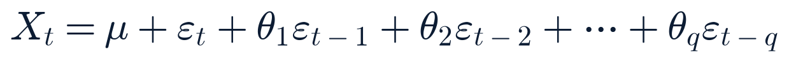

Tuesday, August 11, 2026 · Generated 6:45 AM ET · All times Eastern (America/New_York)
Overall confidence: High — broad primary-source coverage, few source failuresMarkets: pre-market
Generated
2026-08-11 06:45 ET
News cutoff
2026-08-11 06:30 ET
Market data as of
2026-08-11 05:55 ET
Report version
1.0
Reading time
~42 minutes
Market status
Closed — opens 9:30 ET (no holiday, full session)
1 source blocked this run (who.int, direct fetch) — see System health.
Data freshness by source
Source
Freshness label
Data age
Index futures (Yahoo)
Delayed +10m
~20 min
Treasury par curve
EOD official
Aug 10 curve date
FRED (CPI, PAYEMS, rates)
EOD official
1–10 days per series
Cboe VIX complex
Delayed +15m
~25 min
Equities (watchlist)
Previous close
Aug 10 close
FX (Frankfurter/ECB)
EOD official
Aug 10 fix
Crypto (CoinGecko)
Live
~5 min
Whole-market breadth
EOD official
Aug 10 session
FINRA short volume
EOD official
Aug 10 session (not short interest)
Section 2Top Stories
NewConfirmed — multiple sources
Magnitude-7.4 earthquake kills 130+ in western Colombia, toll still rising
Event Mon Aug 10, 12:34 UTC (8:34 AM ET) · Published Aug 10 afternoon · Last checked 06:15 ET Aug 11
What happened
USGS confirmed a magnitude-7.4 earthquake struck Chocó department in western Colombia (epicenter near San José del Palmar, ~150 miles west of Bogotá), depth 107 km, at 12:34 UTC Monday. A magnitude-5.0 aftershock followed roughly an hour later ~10 miles from the epicenter.
Why it matters
One of the deadliest single earthquakes globally this year so far; Colombia's government has declared a national disaster and deployed troops for search-and-rescue and relief.
What is confirmed
USGS magnitude/depth/location. The Colombian Association of Capital Cities' toll of at least 132 dead and 570 injured, cited by multiple wire services (CNN, NBC News, Al Jazeera). At least 61 buildings collapsed and 1,575 homes damaged, including pediatric and neonatal wards at a hospital in Cali.
What remains uncertain
The toll rose through Monday (from an initial wire count near 20, to 111, to 132) and was still climbing as of this report's news cutoff — treat the current figure as provisional, not final.
Context
Colombia sits on an active seismic zone at the boundary of the Nazca, Caribbean, and South American plates; earthquakes of this magnitude are uncommon but not unprecedented in the region.
Impact
People/humanitarian: primary. No confirmed markets/industry read-through identified this run; Colombia-linked assets (e.g., EWZ-adjacent Latin America funds) were not observed to move materially on this in available data.
What happens next
Search-and-rescue continues; toll expected to be updated through the day. Will re-check for this evening's Closing Brief.
Related assets (exposure ≠ direction)
None identified — primarily a humanitarian story, not a flagged market exposure
Sources: USGS (primary, magnitude/depth) · Colombian Association of Capital Cities via CNN, NBC News, Al Jazeera, The Watchers (secondary, toll figures) · Colombian government national-disaster declaration (primary, response).
Expanded analysis (collapsed by default)
The toll's rapid climb over a single day (20 → 111 → 132) is typical of the early information fog after a major quake in a rural, mountainous department with limited access — official counts tend to be revised upward for 24–72 hours as isolated communities are reached. This report will track the figure across today's and tonight's editions rather than anchoring to any single number as final.
Russia hits Zaporizhzhia and Kyiv overnight; Zelensky says North Korean ballistic missiles were used, warns Moscow is “preparing for escalation”
Event overnight into early Tue Aug 11 local (Ukraine) · Published Aug 11 early AM ET · Last checked 06:20 ET
What happened
Russia struck Zaporizhzhia with missiles and guided aerial bombs and hit Kyiv (explosions/fires in the city center, with reported damage near a hospital) and reportedly Dnipropetrovsk overnight. Ukraine's air force said Russia also launched roughly 120 long-range strike drones nationwide. Zelensky said the barrage included North Korean-supplied ballistic missiles, Zircon hypersonic cruise missiles, and Iskander missiles, and said Russia is receiving additional missiles and preparing to station more North Korean troops.
Why it matters
A direct North Korean weapons-transfer claim layered onto an already-escalating strike exchange (following Monday's Ukrainian strike on the Taneco refinery 750 miles inside Russia); Zelensky is using it to press allies for more air-defense aid and sanctions.
What is confirmed
The fact and general location of the strikes, via Ukrainian officials (Zaporizhzhia Gov. Ivan Fedorov, Zelensky) with Reuters/AP wire pickup.
What remains uncertain
Reuters said it could not independently verify the North Korean/Zircon/Iskander weapon-type claims. Casualty counts for Zaporizhzhia vary by outlet: 5–6 killed, 19–21 wounded. Russia's Defense Ministry separately claimed it downed ~320 Ukrainian drones and reported 5 killed/6 injured in Ryazan region from debris — an unverified Russian-source claim shown for completeness, not confirmed independently.
Context
Follows Monday's Ukrainian drone strike on the Taneco refinery in Tatarstan (death toll now reported 12–13, wounded estimates 39–75 depending on source) and a ~126-drone/missile Russian barrage on Ukraine the same day — a continued tit-for-tat deep-strike exchange with no diplomatic de-escalation visible.
Impact
People/security: primary. Energy/markets: this thread has coincided with elevated oil prices this week (see Premarket Setup) alongside the separate Hormuz tension — no single confirmed catalyst asserted for oil's move.
What happens next
Watch for Western government reaction to the North Korean weapons claim specifically, and for any further overnight strikes ahead of tonight's brief.
Sources: Zelensky/Ukrainian officials via Reuters, AP (Euronews, Al Jazeera, Kyiv Independent, CNBC pickups) · Russian Defense Ministry via TASS (unverified claims, labeled) · Al Jazeera, NBC News (Taneco refinery follow-up figures).
Expanded analysis (collapsed by default)
The North Korean ballistic-missile claim, if it holds up to independent verification, would mark a continuation of a publicly acknowledged Russia-North Korea military relationship (troops and materiel) rather than a new development in kind — the significance here is Zelensky's explicit linkage of it to warnings about troop buildup, aimed at shaping Western aid decisions ahead of no scheduled diplomatic track currently active.
NewConfirmed — primary (company release)
Nvidia confirms $500B AI-infrastructure financing platform with Apollo, BlackRock, Blackstone, Brookfield, Goldman Sachs and KKR
Event Aug 10 · Published Aug 10 evening · Last checked 06:10 ET
What happened
What began Monday as a Financial Times report that Nvidia was “in talks” on AI-infrastructure financing has been confirmed directly by Nvidia: a press release describes compute-financing partnerships with the six named firms to mobilize over $500 billion in third-party capital for AI infrastructure (chips, power generation, data centers). KKR co-CEOs Joe Bae and Scott Nuttall confirmed on record. CEO Jensen Huang told CNBC he approached only these six firms and none declined.
Why it matters
One of the largest disclosed AI-infrastructure financing structures to date; reinforces (and, for some observers, revives circularity concerns around) the AI-capex buildout financed increasingly through private-capital vehicles rather than direct corporate balance sheets.
What is confirmed
The partnership and the $500B mobilization figure, via Nvidia's own investor-relations press release and joint KKR statement.
What remains uncertain
Specific deal terms, allocation across the six partners, and timeline are not yet detailed; no individual statements yet located from Apollo, BlackRock, Blackstone, Brookfield, or Goldman Sachs beyond the joint release.
Context
NVDA fell ~2.3% Monday on the initial FT report, the session's largest mega-cap move, while APO/BX/KKR (named partners) traded higher rather than in sympathy — consistent with the market initially reading this as a financing/circularity story rather than a pure Nvidia-demand negative.
Impact
Markets: AI-infrastructure financing structure, mega-cap tech and private-capital sentiment. Industries: data centers, power/utilities (CEG, VST named on this report's ai_infra watchlist).
What happens next
Watch for individual confirming statements from the five other named partners and for analyst notes on structure/leverage.
Sources: Nvidia investor-relations press release (primary) · Bloomberg, Axios (secondary) · Financial Times (original report, secondary) · this report's own Yahoo Finance data (Monday's -2.3% move).
Expanded analysis (collapsed by default)
The structure — third-party capital mobilized through asset managers and banks rather than Nvidia's own balance sheet — is one way the industry has responded to questions about whether AI capex can keep scaling off corporate cash flow and debt alone. It does not, by itself, resolve the underlying debate about whether current AI infrastructure investment will be matched by revenue; that remains an open question this report will continue tracking through subsequent quarters' AI-infra capex disclosures.
NewConfirmed — primary (company releases)
Space-sector earnings split: Rocket Lab posts a record quarter and reiterates its $8B Iridium deal; AST SpaceMobile misses on revenue and EPS but shares rise anyway
Event after close Mon Aug 10 · Published Aug 10 evening · Last checked 06:20 ET
What happened
Rocket Lab (RKLB): record revenue $234M (+62% Y/Y, beat estimates); net loss narrowed to $49.3M (-$0.08/share) from -$66.4M a year ago; non-GAAP gross margin 41.5% (up from 36.9%); record backlog $2.36B (+137% Y/Y); Q3 guidance $250–265M, another record. Reiterated its ~$8B Iridium acquisition (announced June 29) integrating a 66-satellite constellation with 2.5M+ subscribers and $870M annual revenue. AST SpaceMobile (ASTS): revenue $31.5M (up from $15.8M in Q1) missed the ~$35M consensus; EPS -$0.77 vs. -$0.37 consensus, a wider loss than expected; Q2 capex jumped to ~$610M from $257M in Q1. Reaffirmed FY2026 revenue guidance of $150–200M, citing a $1.3B backlog and $3.7B pro forma cash.
Why it matters
The two most closely watched pure-play space-sector reports this week, with sharply different quality of beat despite both stocks trading higher premarket.
What is confirmed
Both companies' own reported figures, via company releases/IR and cross-confirmed by StockTitan, Investing.com, TipRanks earnings-transcript coverage.
What remains uncertain
Live Tuesday premarket price levels for both names were not independently re-verified against a market-data source by this report's cutoff; ASTS was reported ~+5.4% premarket by Benzinga, attributed in press coverage to positioning around the upcoming BlueBird 11–13 satellite launch and broad futures strength rather than the earnings print itself — framed here as “coincided with,” not caused by, since there was no earnings beat to explain a rally.
Context
Both report the same day as space-sector watchlist names have shown high dispersion all month (SPCX, YSS, BKSY, RDW swings tracked in prior editions).
Impact
Space sector: primary. Watchlist names RKLB, ASTS, and by extension sector sentiment into Firefly Aerospace's (FLY) report after tonight's close.
What happens next
This report's own premarket/close data will confirm actual price reaction in tonight's Closing Brief; Firefly Aerospace (FLY) reports after close today.
Forecast 2026-08-10-pm-2 (logged last night) called for ASTS and/or RKLB to move more than 8% in the after-hours/next-session reaction; RKLB's beat-and-raise and ASTS's premarket bounce despite a miss both point toward that forecast tracking correct, pending this evening's confirmed close-to-close data.
DevelopingConfirmed — multiple sources
Trump's childhood-vaccine executive order draws AAP, AMA and bipartisan pushback; New York's governor signs a counter-order
Event signed Mon Aug 10 afternoon · Published Aug 10 evening into Aug 11 AM · Last checked 06:05 ET
What happened
Following Monday's executive order (90-day HHS review of the childhood immunization schedule, recommending the MMR shot be split into three doses, and directing the Attorney General to pursue litigation against states that don't allow religious/medical vaccine exemptions), medical and political reaction arrived quickly. American Academy of Pediatrics President Dr. Andrew Racine called it “disheartening and dangerous” amid record measles cases; the American Medical Association also criticized it. Sen. Bill Cassidy (R-LA, a physician) said “This executive order is wrong… Vaccines DO NOT cause autism.” New York Gov. Kathy Hochul signed a state executive order expanding COVID-vaccine access, describing it as a rebuke to HHS Secretary Robert F. Kennedy Jr.
Why it matters
Directly contested by a Republican senator who is also a physician — a notable break from party-line reaction — and draws the nation's leading pediatric and medical associations into open conflict with the administration's public-health policy.
What is confirmed
The EO's contents and the cited reactions, via primary organizational statements and multiple wire outlets.
What remains uncertain
No new lawsuit specifically targeting this Aug 10 order has been reported yet; existing litigation over a January 2026 schedule change (AAP v. HHS, D. Mass.) remains stayed and is a separate matter. The White House says the new order complies with existing injunctions — not independently verified by this report against the injunction text.
Context
Comes as US measles cases sit at a 35-year high; mainstream epidemiological consensus finds no causal vaccine-autism link, a point this report notes as established science, not a contested claim, while still reporting the order's content and reactions neutrally.
Impact
Public health policy: primary. Health-sector: indirect, no specific equity read-through identified.
What happens next
Watch for a formal legal challenge to the Aug 10 order specifically, and for any DOJ action under the states-exemption litigation directive.
Related assets (exposure ≠ direction)
None flagged
Sources: AAP statement via The Hill · AMA via The Hill · CNN · NBC News · JURIST (AG litigation directive) · AOL (Hochul counter-order).
Expanded analysis (collapsed by default)
This report notes the established scientific consensus (no vaccine-autism causal link) as background fact per SPEC's evidence-accuracy standard, while reporting the order's content, the administration's stated rationale, and named critics' arguments without editorializing on the underlying policy dispute itself.
Materially changedConfirmed-multiple (secondary synthesis); WHO primary blocked
DRC Ebola outbreak tops 4,200 cases and 1,900 deaths, WHO calls the spread “unprecedented”
Event ongoing, figures dated Aug 7–8 · Published Aug 7–8, surfaced this run · Last checked 06:00 ET
What happened
The most recent available figures (dated Aug 7, reported Aug 8) put the outbreak at 4,209 confirmed cases and 1,916 deaths, up from the 3,874 cases / ~1,800 deaths this report tracked as of the weekend — a jump of roughly +89 cases and +21 deaths in the day-over-day comparison cited in that report. Ituri province remains ~86% of cases (3,636 cases / 1,551 deaths); North Kivu 470/315. 595 patients remain in isolation. WHO's director-general has called the spread “unprecedented”; WHO and Africa CDC jointly urged community-led containment action Aug 6.
Why it matters
Confirms this is now the second-largest Ebola outbreak on record and still growing, not plateauing.
What is confirmed
The case/death figures via secondary synthesis of Al Jazeera and UN News reporting attributed to DRC and WHO sources.
What remains uncertain
This report's direct fetch of the WHO Disease Outbreak News page (who.int) was blocked by network egress filtering this run, as in prior runs — figures here are secondary-sourced, not independently verified against the WHO primary page. No figures dated later than Aug 8 were located.
Context
Continues a multi-week rising trend this report has tracked since late July; the toll has more than doubled since this report's initial flag.
Impact
Public health: primary, regional (DRC, with 2 deaths previously confirmed in Uganda).
What happens next
Continue tracking case growth rate; watch for any WHO Public Health Emergency of International Concern determination.
Related assets (exposure ≠ direction)
None flagged
Sources: Al Jazeera (secondary, citing DRC/WHO figures) · UN News (secondary) · WHO Disease Outbreak News page (primary, not independently reachable this run — labeled).
NewConfirmed — multiple sources
Anthropic, Macquarie and GIC form “Theseus Infrastructure” to build dedicated US data centers
Event Aug 10 · Published Aug 10 · Last checked 06:10 ET
What happened
Anthropic, Macquarie Asset Management, and Singapore's GIC announced a new joint venture, Theseus Infrastructure, to develop and lease purpose-built US data centers to Anthropic under long-term contracts. Macquarie and GIC provide majority equity; Anthropic has agreed to cover consumer electricity-rate increases tied to the construction and operation of the facilities.
Why it matters
Another large AI-infrastructure financing vehicle disclosed the same week as Nvidia's $500B platform (above), part of a broader industry pattern of financing AI data-center buildout through dedicated joint ventures with asset managers rather than direct corporate capex alone. The consumer electricity-cost commitment is a specific, checkable term worth tracking.
What is confirmed
The venture's formation and structure, via Macquarie's own press release and Bloomberg's report.
What remains uncertain
Specific dollar size, site locations, and timeline were not detailed in the sources reviewed this run.
Context
Anthropic, PBC (maker of the AI system generating this report) remains a private company; this report continues to apply the same entity-registry and neutral-reporting standard to it as to any other company per the registry procedure.
Impact
AI infrastructure/data-center capex theme broadly; no direct public-equity exposure (Anthropic is private).
What happens next
Watch for site announcements and any local rate-commission proceedings tied to the electricity-cost commitment.
Iran's Araghchi tells Germany Hormuz security “depends on halting US military operations”; Oman traffic-management deal still “very close,” not signed
Event Aug 11 (call) · Published Aug 11 AM · Last checked 06:00 ET
What happened
Iranian Foreign Minister Abbas Araghchi held a phone call with German Foreign Minister Johann Wadephul, saying Strait of Hormuz security depends on the US halting military operations, including the naval blockade of Iranian ports, and repeating that an Oman-brokered traffic-management mechanism is “very close” while full reopening remains conditioned on US compensation for war damages.
Why it matters
Incremental restatement of Iran's negotiating position, not a breakthrough; keeps the corridor-deal thread and the broader Hormuz tension (a contributor to this week's oil-price move) unresolved ahead of no set deadline.
What is confirmed
The fact and content of the call, via Iranian-sourced reporting picked up by Tribune India.
What remains uncertain
No new US or Trump statement was found overnight beyond his standing “semi-negotiating” framing; no new Hormuz vessel incident was confirmed in the last 12 hours.
Context
Iran hardened its Hormuz-reopening preconditions over the weekend (port blockade lift, troop withdrawal, sanctions relief, war damages); this call restates rather than changes that position.
Impact
Energy: oil prices remain elevated this week partly on this thread (see Premarket Setup) — a likely contributor alongside the Ukraine refinery strike, not a confirmed single catalyst.
What happens next
Watch for a signed Oman traffic-management agreement or any US response to the "halt military operations" precondition.
Related assets (exposure ≠ direction)
CL=F, XLE
Sources: Tribune India, citing Iranian statements (single-reliable-source, official).
Materially changedConfirmed — multiple sources
Space roundup: Japan's H3/Michibiki-7 launch succeeds with a US Space Force payload aboard; China's Long March 7A probe focuses on a shared engine design
Event Aug 10 · Published Aug 10–11 · Last checked 06:15 ET
What happened
JAXA confirmed its H3 rocket successfully launched the Michibiki-7 (QZS-7) navigation satellite Monday, after Sunday's Typhoon Dolphin-driven delay this report flagged as a materialized risk. Notably, the mission carried SACHI (Situational Awareness Camera Hosted Instrument), built by MIT Lincoln Laboratory for the US Space Force — a US-Japan space-domain-awareness cooperation angle. Separately, trade press (SpaceNews, Aviation Week) reports China's investigation into Sunday's Long March 7A failure is focused on the YF-100 kerolox engine, used on the 7A's first stage/boosters and shared with the Long March 5 — raising a flagged (not confirmed) risk to the Chang'e-7 lunar south-pole mission, currently stacked at Wenchang on a Long March 5 targeting a launch window around Aug 24.
Why it matters
Resolves this report's prior "postponed by typhoon" flag as a successful outcome; the Long March 7A engine-scrutiny angle is a genuine open risk to China's next major lunar mission if the shared-engine theory holds.
What is confirmed
H3/Michibiki-7 launch success (JAXA, Space.com). The Long March 7A engine-scrutiny reporting is trade-press analysis, not a CASC-confirmed root cause.
What remains uncertain
No CASC technical statement or root-cause determination on the Long March 7A failure has been issued as of this morning; the YF-100/Chang'e-7 risk is analysis, explicitly labeled as such.
Context
China's Long March 7A failure was its 4th orbital launch failure of 56 attempts in 2026 (this report's Aug 10 pm edition).
Impact
Space industry: primary. No direct equity read-through identified for either item.
What happens next
Watch for a CASC investigation statement and for whether the Chang'e-7 launch window holds.
Wednesday's CPI is the week's pivot: prediction markets lean tame, setting up direct tension with Fed Chair Warsh's hawkish conditional signal
Event ongoing, release Wed Aug 12 08:30 ET · Published various · Last checked 06:05 ET
What happened
Consensus for July CPI: headline +0.2% m/m (some estimates as low as +0.1%), 3.4% y/y (down from 3.5%); core +0.2% m/m, 2.5% y/y (down from 2.6%). Kalshi prediction markets as of Monday put <55% odds headline CPI prints above 3.3% y/y and only 15% odds above 3.4%; for core, 47% odds above 2.4% and only 11% odds above 2.5% — markets are leaning toward a tame print. No new remarks were found overnight from Fed Chair Kevin Warsh (who reportedly signaled to the Financial Times last week he would back a September hike if inflation data run hot) or Gov. Lisa Cook, consistent with what looks like a pre-CPI quiet period from Fed speakers.
Why it matters
Sets up a direct test: if CPI comes in as tame as prediction markets currently price, it directly contradicts the premise behind Warsh's hawkish conditional signal and would likely reinforce September-cut pricing already supported by July's shock jobs miss (-23,000).
What is confirmed
The consensus estimates and prediction-market odds as reported by CNBC, Morningstar, and market-data aggregators.
What remains uncertain
The actual print, obviously; and whether Warsh's hawkish framing reflects committee consensus or his own view alone — no vote has occurred.
Context
This is the presumed tie-breaker this report has tracked since the weekend between Warsh's private hawkish signal and post-jobs-report dovish market pricing.
Impact
Rates: front-end and 10Y most sensitive. Equities: broad, via rate-path repricing. FX/gold: dollar and gold have been trading partly on this expectation.
What happens next
CPI releases Wed Aug 12 08:30 ET; PPI follows Thu Aug 13.
Related assets (exposure ≠ direction)
TLT, SHY, IEF, DXY-proxy (EURUSD), GC=F, SPY, QQQ
Sources: CNBC (prediction markets) · Morningstar (CPI preview) · Cleveland Fed nowcast · JPMorgan (Feroli estimate) · this report's own FRED data.
Expanded analysis (collapsed by default)
Forecast 2026-08-10-am-1 (logged this weekend) called for CPI to print hot enough (core ≥~0.3% m/m) to revive September rate-hike odds, with horizon Aug 12 — today's prediction-market read (only ~11% odds core prints above 2.5% y/y) currently leans against that forecast resolving correct, though the actual print is what will grade it.
Section 3 · the two-minute versionTwo-Minute Executive Brief
The world A magnitude-7.4 earthquake in western Colombia has killed 130+ and is still being counted. Russia and Ukraine traded overnight strikes again — Zaporizhzhia and Kyiv hit with, per Zelensky, North Korean ballistic missiles, a day after Ukraine's deepest strike of the war on a Russian refinery. Iran restated its Hormuz conditions to Germany without a breakthrough. Gaza's Aug 13 checkpoint approaches with no new movement. Domestically, Trump's childhood-vaccine executive order drew AAP/AMA criticism and an unusual public break from Sen. Bill Cassidy.
Markets Futures are essentially flat overnight (ES +0.02%, NQ +0.10%, YM -0.09%, RTY -0.06%) after Monday's mixed, narrow close (S&P -0.05%, Nasdaq -0.27%, Dow -0.25%, Russell -0.49%). Oil extends its rally (WTI +2.33% overnight, on top of Monday's ~5% jump) on Hormuz tension and the Ukraine refinery strike; gold +1.58%. The 10Y yield sits near 4.70%, little changed. VIX 15.51, flat. Bitcoin -1.4% to ~$64,100. Breadth was decliner-led Monday (1,926 advancers / 2,992 decliners of 5,426 screened).
Central theme AI-infrastructure financing structures (Nvidia's $500B platform, Anthropic's Theseus JV) are scaling up the same week markets brace for Wednesday's CPI as the decisive data point in the Warsh-hawkish-vs-jobs-dovish Fed tension.
Most important new development Nvidia confirmed a $500B AI-infrastructure financing platform with six major Wall Street firms — upgraded from Monday's FT rumor to a company-confirmed fact.
Most important risk Wednesday's CPI (08:30 ET) is the week's pivot point; a hot print would directly validate Fed Chair Warsh's hawkish conditional signal and could unwind September rate-cut pricing built on July's jobs shock. Trigger: core CPI m/m materially above the ~0.2% consensus. Horizon: tomorrow morning.
Most important positive development Rocket Lab posted a genuine beat-and-raise quarter with record backlog, a clean contrast to a week of mixed AI-capex sentiment.
Key unknown Whether the Zaporizhzhia strike's claimed North Korean ballistic-missile involvement holds up to independent verification, and whether it changes Western allies' aid calculus.
Deserves attention today
Colombia earthquake toll update (ongoing, still rising as of this report).
July CPI tomorrow 08:30 ET — the week's Critical-tier release.
Firefly Aerospace (FLY) earnings after close today, the last space-sector report of the week besides SPIR/LUNR/YSS.
Minnesota and Alabama hold primaries today; results expected tonight (see Section 13).
Section 4Since Yesterday’s Close
New since closeColombia earthquake
Not previously tracked → M7.4 quake killed 132+, still rising → a major new humanitarian story. Current confidence: high on the fact, low on the final toll.
Material updateRussia-Ukraine strikes
Monday's Taneco refinery strike (12–13 killed) → overnight Russian strikes on Zaporizhzhia/Kyiv with claimed North Korean missiles, Zelensky escalation warning → exchange continues with no de-escalation signal. Current confidence: high on the strikes, medium on the weapon-type claims (unverified by Reuters).
Material updateNVDA $500B AI-financing venture
Monday's FT "in talks" report → Nvidia's own press release confirms the platform and six partners by name → verification upgraded from Single-reliable-source to Confirmed-primary. Current confidence: high.
New since closeSpace-sector earnings (RKLB, ASTS)
Not previously tracked as reported results → RKLB beat-and-raised with record backlog; ASTS missed on revenue/EPS but reaffirmed guidance → resolves forecast 2026-08-10-pm-2's setup, actual price reaction pending confirmed data tonight. Current confidence: high on the reported figures.
Material updateTrump vaccine EO reaction
EO signed Monday afternoon → AAP, AMA, Sen. Cassidy criticism and NY Gov. Hochul's counter-order arrived within hours → confirms this will be a sustained multi-day story, not a one-cycle item. Current confidence: high.
Material updateDRC Ebola
Weekend figure of 3,874 cases / ~1,800 deaths → Aug 7-8-dated figures of 4,209 cases / 1,916 deaths → confirms continued acceleration, not a plateau. Current confidence: medium-high (secondary-sourced; WHO primary page still unreachable this run).
FadedTyphoon Dolphin / H3 launch delay
Tracked since Aug 7 as a forward-looking risk to the H3/Michibiki-7 launch → launch succeeded Monday; typhoon weakened with no confirmed China casualties → resolved, dropping from active tracking. Current confidence: high.
Section 5Overnight World Developments
The overnight window's dominant story is the Colombia earthquake (Top Story 1) — still an active, rising-toll disaster. The Russia-Ukraine strike exchange continued (Top Story 2), with Zelensky's North Korean-missile claim the notable new element, still unverified independently. Typhoon Dolphin weakened after making landfall in Zhejiang, China Sunday (~5:30 PM local); over 1 million people were evacuated across Wenzhou, Fujian, and Shanghai, with 943 flight cancellations at Shanghai's two main airports, but no deaths or injuries have been reported in China, a contrast with Okinawa's earlier impact (5 injured). Heavy rain and flash-flood risk continue for eastern/southern Zhejiang today.
Kumamoto, Japan earthquake recovery: the confirmed toll in the most recent dated reporting (Aug 8) is 39 (36 quake-direct, 1 heat-stroke-linked, 2 under review) — one higher than the 38 this report has cited in recent editions. It is not clear from available sourcing whether this reflects a newly confirmed death or a reclassification of a previously "under review" case; this report is noting the discrepancy for transparency rather than asserting a new fatality. Evacuation-center population has eased to ~6,200 (from over 7,500 a week prior); water outages still affect 30,000+ homes in Uki, Yatsushiro, and Hikawa, with repairs targeted for end of August.
Section 6US Politics & Government
The childhood-vaccine executive order (Top Story 5) dominates the domestic-policy cycle. Separately, the Lisa Cook removal fight remains unchanged: the White House's Aug 5 letter alleging false mortgage statements gave Cook until roughly Aug 26 to respond; her attorneys (Abbe Lowell, Norm Eisen) call the allegations "baseless" and say they will challenge this "latest pretext." No new filing was found overnight.
The mail-ballot executive order remains at the Supreme Court, fully briefed and awaiting a ruling. Justice Ketanji Brown Jackson, as circuit justice for the 1st Circuit, previously declined an immediate administrative stay and instead ordered the plaintiff states to respond to the Justice Department's emergency application; that response was due Monday, Aug 10. No order has been issued as of this report's cutoff — a ruling could arrive at any time.
Attorney General Todd Blanche, sworn in Monday, has one confirmed action on record so far: a memo formally rescinding the "$1.8 billion anti-weaponization fund" he had earlier established as Deputy AG, done last week to smooth his confirmation. No additional Aug 11 directive has surfaced. The Senate Homeland Security Committee's Aug 6 contempt referral of Dr. Anthony Fauci to DOJ remains unresolved — DOJ has confirmed receipt and says it "will work with the Senate accordingly," with no charging decision reported. The FY2027 NDAA remains blocked in the Senate (cloture failed 50-46 on July 14); informal House-Senate conference talks continue with a reconciled vote not expected before a late-autumn or post-election session.
Flag for tonight Minnesota holds its statewide primary today — a wide-open race after Sen. Tina Smith and Gov. Tim Walz both declined re-election, with Sen. Amy Klobuchar the top Senate contender. Alabama holds primaries in Congressional Districts 1, 2, 6, and 7 following court-ordered redistricting. Results are expected tonight; not covered further here as they postdate this report's news cutoff.
Section 7Geopolitics
The Russia-Ukraine overnight strikes (Top Story 2) and Iran/Hormuz diplomatic call (Top Story 8) are covered above. On the Saudi-Turkiye-Pakistan defense pact: no new Houthi attack occurred overnight, but a Jerusalem Post analysis piece notes that neither Turkiye nor Pakistan has issued any statement invoking the Mecca Joint Defence Agreement over Saturday's Houthi strikes on the Jazan refinery and Mokha — this is analysis, not a new event, and is labeled Single-reliable-source. On Gaza: no new statement from Netanyahu, Hamas, or the Board of Peace was found in the overnight window; the Aug 13 14-day roadmap checkpoint remains three days out with the underlying disarm-before-withdraw sequencing dispute unresolved.
Ethiopia's Tigray region: no new fighting was confirmed overnight, consistent with the tentative de-escalation both TPLF-affiliated and Ethiopian federal sources have described since the Aug 1–2 Shererina clashes; this remains a single-sourced, not independently confirmed, read on the federal side. Taiwan/China: analysts describe a "relative lull" in coercive Chinese activity, attributed in part to the ongoing Iran conflict's draw on global attention and a reported Xi-Trump détente — this is analyst characterization, not a hard data point. No new North Korea missile activity was found beyond the previously reported Aug 6 short-range test, though North Korean-supplied weapons are now implicated (unverified) in the Zaporizhzhia strike above.
Section 8Economics & Central Banks
Wednesday's CPI print (Top Story 9) is this week's central economic event. No new Fed speaker remarks were found in the overnight window from Chair Warsh, Gov. Cook, or other FOMC participants — consistent with what looks like a deliberate pre-CPI quiet period, worth noting explicitly rather than treated as no news.
July CPI (release pending) Scheduled · releases 08:30 ET Wed Aug 12
Period
July 2026
Prior (June)
Headline 2.9% Y/Y (CPIAUCSL index 332.568 for June per FRED, seasonally adjusted level); Core (CPILFESL) 336.065
Consensus (headline)
+0.2% m/m (range +0.1% to +0.2%), 3.4% y/y
Consensus (core)
+0.2% m/m, 2.5% y/y
Prediction markets (Kalshi, as of Mon)
<55% odds headline >3.3% y/y; only 15% odds >3.4%. Core: 47% odds >2.4%; only 11% odds >2.5%.
Read
Markets are leaning toward a tame print, which would tend to support September rate-cut pricing already favored by July's jobs shock; a hot print would instead corroborate Warsh's hawkish conditional signal. This report makes no prediction of its own beyond the logged forecast in Section 15/ledger.
Initial jobless claims EOD official · week ending Aug 1
Actual
199,000
Prior
198,000 (week ending Jul 25)
Trend
Modestly higher week-over-week; still within the low-200k range this report has tracked, not yet signaling a labor-market break beyond the already-reported July payrolls shock.
Treasury's 3-Year Note auction ($58B) is today, part of the current quarterly refunding cycle (10-Year Wednesday, 30-Year Thursday); see Section 13.
Section 9Business & Corporate
Nvidia's $500B AI-infrastructure financing platform (Top Story 3), the Rocket Lab/AST SpaceMobile earnings split (Top Story 4), and the Anthropic/Macquarie/GIC data-center venture (Top Story 7) are covered above. Firefly Aerospace (FLY) reports Q2 results after close today — the last space-sector earnings report of the week besides Spire Global (Wed), Intuitive Machines and York Space Systems (Thu). Consensus estimates for FLY: revenue $89.6M (+476% Y/Y), EPS -$0.22; Zacks' earnings-prediction model does not conclusively signal a beat (Earnings ESP 0.00%).
Novo Nordisk's stock (NVO) remains under analyst pressure following the ZEUS trial's failure to show cardiovascular benefit for ziltivekimab (hazard ratio 0.99 vs. placebo); Mizuho and Goldman Sachs analyst actions from the days immediately following the readout remain the most recent found (Goldman cut its CagriSema peak-sales estimate from $11.8B to $5B). No new dated action was found overnight specifically. Chipotle/Qdoba's salmonella outbreak (345 cases, 27 states, zero deaths) is unchanged from last week's figures; FDA continues to state there is no ongoing risk at either chain.
Monday's cash session closed narrowly lower and mixed (S&P -0.05% to 7,753.94, Nasdaq -0.27%, Dow -0.25%, Russell -0.49%), weighed in part by NVDA's ~2.3% decline on the AI-financing report and rising oil prices; see Section 14 for the full premarket setup and Section 19 for sector detail.
Section 10Tech, AI & Cybersecurity
No overnight change on the Iran-linked water-utility cyberattacks thread: scope holds at roughly 12 states, with no new state confirmed, no new operational-impact report, and no new FBI/CISA attribution statement. Investigators continue examining the "false flag" hypothesis (an actor deliberately mimicking Iranian tactics) as a second, independent reason attribution remains unresolved.
No new AI-lab safety-boundary disclosure was found overnight beyond the pattern this report has tracked across Anthropic, OpenAI, and Meta (each attributed to an "evaluation misconfiguration" during third-party testing by Irregular). The ShinyHunters/EY extortion matter remains unresolved with no confirmed leak or payment past the July 31 deadline.
On vulnerabilities: Cisco's actively exploited FMC flaws (CVE-2026-20131, CVE-2026-20316) remain confirmed-exploited with no new development. This report could not independently confirm current CISA KEV status for two newer VMware CVEs (CVE-2026-59310, CVE-2026-47876) — cisa.gov was blocked by network egress filtering again this run; secondary reporting (Rapid7, SecurityWeek) found no evidence of in-the-wild exploitation for either as of the most recent check, but this is not a primary-source confirmation. Separately (not overnight, but newly surfaced this run): the Progress Kemp LoadMaster flaw (CVE-2026-8037, CVSS 9.6) was added to CISA's KEV catalog Aug 7 after active exploitation, with a federal remediation deadline of Aug 10 already passed; and a Metabase SQL-injection zero-day was used to breach Metabase Cloud and steal data from customers including Framework and Tally, patched on the cloud platform within hours of detection (self-hosted deployments remain at risk until patched).
Section 11Science & Engineering
The Colombia earthquake (Top Story 1) is this cycle's dominant science-adjacent story from a hazard-monitoring standpoint; USGS parameters (M7.4, 107km depth, Chocó department) are independently confirmed via the agency's own feed. No other major overnight science breakthrough was identified. A total solar eclipse over parts of Europe is scheduled for Aug 12 — forward-looking, not a same-day item, noted here for tomorrow's calendar awareness.
Section 12Space & Spaceflight
The H3/Michibiki-7 launch success and Long March 7A investigation update are covered in Top Story 6. SpaceX's Falcon 9/Starlink Group 10-19 mission (29 satellites), scrubbed Monday for weather, is now targeting roughly 10:26–10:54 AM ET today from SLC-40, Cape Canaveral — the company's 72nd Starlink mission of 2026, with an estimated ~85% weather-go probability per launch-tracking sources. No other overnight SpaceX corporate or executive news was found; background (not overnight) from the company's Aug 4 first public-company earnings call: CEO Elon Musk targeted a Starship Flight 14 attempt in late August, aiming to land the upper stage and deploy the first V3 Starlink satellites.
Space-sector earnings (Top Story 4: Rocket Lab, AST SpaceMobile; Firefly Aerospace reports tonight) are the week's dominant space-industry financial story alongside the Nvidia and Anthropic AI-infrastructure financing news (Top Stories 3 and 7), which both touch the data-center/power-infrastructure names on this report's ai_infra watchlist.
Section 13Today’s Calendar
All times ET, Tuesday Aug 11, 2026. Importance classified per SPEC §17, reason in caption text below.
Time ET
Event
Importance
Note
—
Minnesota statewide primary; Alabama CD 1/2/6/7 primaries
Medium
Results expected tonight; not covered until confirmed
~10:30
Falcon 9 — Starlink Group 10-19 (29 sats), Cape Canaveral
Low
Routine Starlink deployment; scrubbed Monday for weather
13:00
3-Year Treasury Note auction, $58B
Medium
Quarterly refunding cycle; settles Aug 17
After close
Firefly Aerospace (FLY) Q2 earnings
Low
Consensus revenue $89.6M (+476% Y/Y), EPS −$0.22
No Critical- or High-tier economic release falls today; July CPI (Critical) releases tomorrow, Wed Aug 12, 08:30 ET.
As of 05:55 ET · futures/commodities/FX Delayed +10m, close-series method · VIX Delayed +15m · crypto Live.
Instrument
Level
Change
Label
ES (S&P futures)
7,778.50
+0.02%
Delayed +10m
NQ (Nasdaq futures)
29,767.75
+0.10%
Delayed +10m
YM (Dow futures)
54,017.00
−0.09%
Delayed +10m
RTY (Russell futures)
3,023.30
−0.06%
Delayed +10m
US 10Y yield (^TNX)
4.70%
+0.84% (~+4bp)
Delayed +10m
Dollar (EUR/USD, inverse proxy)
1.1537
−0.17% (dollar modestly firmer)
Delayed +10m
VIX
15.51
+0.32% vs prior close 15.46
Delayed +15m
WTI crude (CL)
$84.04
+2.33%
Delayed +10m
Gold (GC)
$4,430.50
+1.58%
Delayed +10m
Bitcoin
$64,129
−1.38% (24h)
Live
DXY has no allowlisted free-tier source; the dollar is described here via EUR/USD plus the broader FX basket in the appendix, not a single index. Index futures and cash indices are essentially flat overnight after Monday's narrow, lower close — the overnight tape shows no strong directional conviction heading into Wednesday's CPI. Oil and gold are the standout movers, extending Monday's gains on the combined weight of Hormuz tension (Top Story 8) and the Ukraine refinery/Zaporizhzhia strikes (Top Story 2) — a likely contributor to both, with no single confirmed catalyst asserted given two live geopolitical threads moving concurrently. The 10Y yield ticked up modestly but remains within its recent range.
What markets appear to price: a quiet, wait-and-see premarket ahead of the week's pivotal data point, with residual geopolitical risk premium visible in commodities but not yet spilling into equity futures. Fragile assumption: that Wednesday's CPI comes in tame enough to validate current September rate-cut pricing. What would invalidate it: a core CPI print materially above the ~0.2% m/m consensus, which would corroborate Fed Chair Warsh's hawkish conditional signal and could trigger a rapid futures repricing.
Technical levels (as of Monday's close, Twelve Data 60-session window): SPY $773.03, 2.88% above its 20-DMA and 3.41% above its 50-DMA, effectively at its 52-week high ($773.26). QQQ $720.87, +2.86%/+0.92% vs 20/50-DMA. IWM $299.98, +1.65%/+2.02%, near its 52-week high ($301.71). SPCX $138.74, 14.83% above its 20-DMA (only 41 sessions of history since its June IPO; 50-DMA not yet computable), well off its post-earnings 52-week high of $211.39 but far above its 52-week low of $108.27.
Breadth context from Monday's close: 1,926 advancers / 2,992 decliners of 5,426 screened (up-volume $6.33B vs down-volume $7.19B) — a decliner-led session consistent with the day's narrow, slightly-lower index closes. This is the 12th tracked session; EMA-based pct-above-50/200-day breadth remains unreportable until 50+ sessions of history accumulate.
Notable premarket movers (best-effort, non-consolidated venue data): ASTS reported ~+5.4% premarket per Benzinga despite missing on revenue and EPS (Top Story 4) — described in press coverage as coinciding with broad futures strength and positioning ahead of an upcoming satellite launch, not a result of the earnings print itself. This report did not independently re-verify live premarket levels for the full watchlist this run; treat as directional, not exhaustive.
Section 15 · probability ranges, never fake precisionRisks & Scenarios
Hot CPI reignites September hike pricing
Preconditions: core CPI m/m materially above the ~0.2% consensus (e.g. ≥0.3%). Probability: 15–25% (basis: Kalshi prediction markets put only ~11% odds core CPI prints above 2.5% y/y; adding some tail risk for a surprise). Indicators: shelter/core-services components, any pre-release leaks. Consequences if realized: front-end and 10Y yields up, equity multiple compression, dollar firmer, gold mixed. Invalidators: an in-line or soft print, which most current positioning already expects. Logged as forecast 2026-08-11-am-1 below.
Zaporizhzhia strike's North Korean weapons claim is independently corroborated
Preconditions: a Western government or independent munitions-fragment analysis confirms North Korean ballistic-missile use. Probability: 30–45% within the next week (basis: Reuters has not yet verified; such confirmations have historically taken days when they occur). Consequences if realized: likely accelerates Western air-defense aid discussions and sanctions pressure on both Russia and North Korea; limited direct US equity market impact expected beyond existing defense-sector and energy sensitivity. Invalidators: the claim goes unconfirmed or is walked back.
Preconditions: ongoing search-and-rescue in isolated Chocó communities. Probability: 50–65% that the confirmed toll rises by at least 20 more within 48 hours (basis: typical pattern for major quakes in rural, hard-to-access terrain). Consequences if realized: primarily humanitarian; no market read-through identified. Invalidators: search-and-rescue teams reach all affected areas within the next day without finding significant additional casualties.
Section 16 · learningPhysics Lesson
Physics 12/71 · Newton’s Laws
Isaac Newton's three laws of motion are the foundation nearly everything else in classical mechanics builds on. First: an object at rest stays at rest, and an object in motion stays in motion at constant velocity, unless acted on by a net external force — this is inertia, and it's why you feel pushed back into your seat when a car accelerates (you're not being pushed backward; your body is resisting the forward acceleration). Second: force equals mass times acceleration (F = ma) — the heavier an object, or the faster you want to change its velocity, the more force it takes. Third: for every action there is an equal and opposite reaction — when you push against a wall, the wall pushes back on you with equal force.
This builds directly on yesterday's topic, graphs of motion: those graphs describe what an object's position, velocity, and acceleration are doing over time, while Newton's laws explain why — they connect the kinematics (the description) to the dynamics (the cause). Every curve you plotted yesterday is, underneath, the result of some net force acting according to these three rules.
Section 17 · learningSpaceflight Lesson
Spaceflight 12/75 · Thrust-to-Weight Ratio
Thrust-to-weight ratio (T/W) is exactly what it sounds like: a rocket's total engine thrust divided by its total weight (mass times local gravity) at a given moment. It's a simple but powerful number — if T/W is less than 1, the vehicle cannot lift off at all, no matter how powerful the engines look on paper, because gravity wins. Rockets typically launch with a T/W just above 1 (often around 1.2–1.5) rather than something huge, because as propellant burns off, the vehicle gets lighter while thrust stays roughly constant, so T/W climbs through the flight — starting too high would mean wasting structural mass on engines you don't need once most of the fuel is gone.
This connects directly to today's Top Story on Rocket Lab and AST SpaceMobile (Section 2): T/W is one of the basic design trade-offs every launch-vehicle company has to get right before a rocket ever leaves the pad, and it's a big part of why engine choice and vehicle staging (shedding weight as tanks empty) are such central engineering decisions in the industry these companies compete in.
Section 18 · learningQuant/ML Lesson
Quant/ML 12/118 · Moving Average Model MA(q)
The Moving Average model, MA(q), says today's value of a time series depends not on past observed values directly, but on past shocks — the unexpected parts of recent observations. Formally, X_t = μ + ε_t + θ_1ε_{t-1} + … + θ_qε_{t-q}: the series' mean, plus today's random shock, plus a weighted sum of the last q shocks, each carrying its own coefficient θ. The intuition: some kinds of news have a short-lived but lingering effect — a surprise earnings miss might depress a stock's daily returns for a few sessions as the market digests it, then the effect fades out entirely once q periods have passed.

Equation 12 of 118 — embedded from site/equations/ (registry order).
MA(q) builds on yesterday's topic (Newton's laws, on the physics track) only by analogy, not directly — but within the quant track itself, it's the natural counterpart to the AR (autoregressive) model family: where AR says today depends on past values, MA says today depends on past errors. Combined, they form ARMA models, one of the workhorses of time-series forecasting used throughout finance.
Section 19 · collapsed by defaultFull Market Intelligence Appendix
Open the full market & economic analysisMarket regime
Range-bound, awaiting CPI Supporting evidence: SPY/QQQ/IWM all sit within ~1-3% of 52-week highs, breadth showed a mild positive tilt in factor terms (value/dividend funds outperformed growth Monday: SCHD +0.73%, VTV +0.33% vs VUG -0.23%, IWF -0.25%), and credit spreads remain tight (HY OAS 2.70%, near cycle lows). Contradicting evidence: whole-market breadth was decliner-led Monday (1,926 adv/2,992 dec), TLT fell 0.79% as long yields crept up, and futures show no directional conviction overnight. Confidence: medium — the setup reads as consolidation ahead of Wednesday's CPI rather than a clear trend in either direction. No material change from the prior report's assessment.
Broad equities
Previous close, 2026-08-10 · Previous close.
Fund
Close
Day
Trend
SPY
773.16
−0.01%
At 52w high, above 20/50-DMA
QQQ
721.78
−0.17%
Above 20/50-DMA
IWM
299.87
−0.56%
Near 52w high, above 20/50-DMA
DIA
538.48
−0.21%
Above 20/50-DMA
RSP (equal-weight)
220.30
+0.10%
Modestly outperformed cap-weight SPY
VXUS (ex-US)
—
−0.36%
Underperformed domestic broad funds
Notable: RSP's modest outperformance of SPY (+0.10% vs -0.01%) is a mild contradiction of the decliner-led breadth read above — large-cap-weighted indices were dragged more by a handful of names (NVDA -2.3% on the AI-financing story) than by broad participation.
Estimated — accumulating history (12/200 sessions)
A/D line remains cumulatively negative-leaning across this report's 12-session tracking window; not yet enough history for EMA-based pct-above-50/200-day reporting.
Sectors
SPDR sector ETFs, previous close 2026-08-10.
Sector
Day
XLE (Energy)
+4.63%
XLV (Health Care)
+1.40%
XLB (Materials)
+0.44%
XLC (Comm. Services)
+0.21%
XLF (Financials)
+0.18%
XLI (Industrials)
−0.25%
XLY (Discretionary)
−0.30%
XLP (Staples)
−0.41%
XLK (Technology)
−0.44%
XLU (Utilities)
−0.95%
XLRE (Real Estate)
−1.29%
Energy led decisively on the oil rally (Hormuz/Ukraine-refinery tension, a likely contributor, no single confirmed catalyst); Real Estate and Utilities lagged as rate-sensitive sectors on the modest yield uptick.
Industries & watchlists
Biggest watchlist decliners Monday: YSS −9.82% (a fourth unexplained large single-day decline in two weeks — this report continues to flag it with no identified catalyst), ASTS −4.91%, FLY −4.08%, LUNR −3.90%, RKLB −3.56%, RDW −3.20% — space-sector names broadly softer heading into Monday's/tonight's earnings cluster (ASTS/RKLB reported after Monday's close; FLY reports tonight). Biggest advancers: VSAT +6.21%, KRMN +6.18%, VRTX +5.01%, IBKR +3.94%, ABNB +3.77%, LLY +3.43%, ISRG +3.23%, APO +3.14%, BX +2.99% — a mix of health-care (VRTX, LLY, ISRG) and alternative-asset-manager (APO, BX) strength, the latter plausibly linked to Nvidia's financing-platform news naming them as partners (Top Story 3), though this report does not assert that as a confirmed catalyst.
Rates & curve
Treasury par curve, 2026-08-10 · EOD official.
Tenor
Yield
1M
3.79%
3M
3.89%
6M
4.00%
1Y
4.04%
2Y
4.25%
10Y
4.72%
30Y
5.25%
2s10s +47bp · 3m10y +83bp · 5s30s +84bp. 10Y real yield (DFII10, Aug 7) 2.40%; 10Y breakeven (T10YIE, Aug 10) 2.29%. SOFR (Aug 7) 3.62%. TLT fell 0.79% Monday as long-end yields firmed modestly ahead of CPI.
Credit
HY OAS (BAMLH0A0HYM2, Aug 7) 2.70%, down slightly from 2.71% the prior session — spreads remain tight and near cycle lows, consistent with the "risk-on, moderate" regime read. Credit-fund performance Monday: LQD (IG) −0.54%, HYG (HY) −0.19%, JNK −0.17%, BKLN (leveraged loans) −0.05% — broadly tracking the rates move rather than signaling credit stress.
Volatility & options
Cboe term structure, as of 05:55 ET · Delayed +15m.
Tenor
Level
VIX9D
12.77
VIX
15.51
VIX3M
18.98
Normal contango, no inversion — term structure shows no acute near-term stress pricing despite this week's geopolitical and macro-data risk. Put/call ratio: Source unavailable (Cboe daily options market-statistics path returned an access error again this run, a recurring known issue). Dealer gamma is not tracked (no legitimate free source). MOVE index: not available (no allowlisted free source).
FX
ECB reference rates, 2026-08-10 · EOD official.
Pair (per USD)
Rate
EUR
0.8654
JPY
158.64
GBP
0.7405
CNY
6.7444
MXN
17.1512
DXY has no allowlisted free source; EUR/USD (live snapshot 1.1537, −0.17%) is used as the primary intraday dollar proxy alongside this basket. No unusual cross-currency divergence identified this run.
Commodities
WTI crude (CL) $84.04, +2.33% overnight on top of Monday's ~5% cash-session jump — a likely contributor from combined Hormuz tension and the Ukraine refinery/Zaporizhzhia strikes, no single confirmed catalyst asserted given two concurrent geopolitical threads. Gold (GC) $4,430.50, +1.58%, continuing its multi-week bid. Natural gas (NG) $2.771, −0.82%. Copper (HG) $6.6635, +1.05%.
Crypto
As of 05:55 ET · Live (CoinGecko).
Asset
Price
24h
BTC
$64,129
−1.38%
ETH
$1,876.96
−2.08%
SOL
$75.62
−1.37%
ADA
$0.1884
−3.58%
Total crypto market cap $2.276T; BTC dominance 56.55%. Broad-based modest weakness across majors, no single identified catalyst.
Factors
Monday's factor performance showed a mild value/dividend-over-growth tilt: SCHD +0.73%, VTV +0.33%, IWD +0.23%, USMV +0.20% and VYM +0.28% versus VUG −0.23%, IWF −0.25%, MTUM −0.20%. Low-volatility (SPLV −0.76%) underperformed despite the day's modestly risk-off tape — a minor anomaly, plausibly explained by SPLV's heavier utilities/real-estate weighting into the day's rate-sensitive-sector weakness, offered as a plausible read, not a confirmed cause.
Cross-asset
The cross-asset picture is internally mixed: equities flat-to-lower, oil and gold both bid (commodities pricing some risk premium), long bonds sold off modestly (yields up slightly), and credit spreads tight/stable. This combination is most consistent with markets treating this week's geopolitical threads (Ukraine, Hormuz) as commodity-specific risk rather than a broad risk-off event, while positioning stays cautious ahead of Wednesday's CPI rather than taking a directional stance.
Earnings
This week's watchlist-relevant earnings are concentrated entirely in the space sector: ASTS and RKLB reported Monday after close (Top Story 4); FLY reports tonight; SPIR Wednesday; LUNR (before open) and YSS (after close) Thursday. No mega-cap, financials, health, or consumer watchlist names report this week.
Auctions & liquidity
Today: 3-Year Note auction, $58B, part of the current quarterly refunding cycle (10-Year Wednesday $42B, 30-Year Thursday $25B, all settling Aug 17). Bill supply continues on its routine weekly cadence. No unusual repo or funding-market stress indicators identified this run.
Rocket Lab and AST SpaceMobile investor relations / earnings materials
Macquarie Group press release (Theseus Infrastructure venture)
JAXA (H3/Michibiki-7 launch confirmation)
Treasury daily par yield curve, FRED (CPIAUCSL, CPILFESL, PAYEMS, ICSA, UNRATE, T10Y2Y, DGS2, DGS10, T10YIE, DFII10, SOFR, BAMLH0A0HYM2), Cboe VIX complex, Frankfurter ECB rates, CoinGecko, Massive grouped-daily breadth, FINRA daily short volume, SEC EDGAR current 8-K feed — all fetched and labeled per source in-text
AAP, AMA statements (vaccine EO reaction)
Secondary confirmation:
Reuters/AP wire pickups (Euronews, Al Jazeera, Kyiv Independent, CNBC) on overnight Russia-Ukraine strikes — casualty figures and weapon-type claims explicitly flagged as unverified/disputed where sourced only to one side
Al Jazeera, UN News (DRC Ebola case/death figures — WHO primary page not independently reachable this run, labeled)
Tribune India (Iran FM-Germany FM call, single-reliable-source)
CNBC, Morningstar, Kalshi prediction-market data (CPI preview)
SpaceNews, Aviation Week (Long March 7A engine-scrutiny analysis, explicitly labeled as analysis, not CASC-confirmed)
Methodology note: free-tier equity quotes are non-consolidated single-venue prices and can differ slightly from official closes. Equity/sector/factor figures in this report reflect Monday Aug 10's close (labeled Previous close throughout) rather than a fresh premarket re-fetch of the full watchlist; premarket price color for individual names (e.g. ASTS) is drawn from secondary press coverage and marked best-effort. Delayed data is labeled with its delay everywhere it appears; missing sources are declared unavailable, never estimated silently. Short-volume figures are daily short volume, not short interest, and are not settlement-dated the way short interest is.
Data discrepancy flagged (not a correction): the most recent dated reporting on the Kumamoto, Japan earthquake recovery (Aug 8) cites a toll of 39, one higher than the 38 this report has carried in recent editions. Available sourcing does not make clear whether this reflects a newly confirmed death or a reclassification of a previously under-review case, so this is noted as an open discrepancy rather than logged as a correction to a specific prior published statement.
Corrections: none this run. (When corrections exist they appear here and in ledgers/corrections.json, with the original preserved in git history.)
Forecasts logged this run: 2026-08-11-am-1 (hot CPI reignites Sept hike pricing, 15–25%, horizon 2026-08-12), 2026-08-11-am-2 (Zaporizhzhia North Korean-missile claim independently corroborated within a week, 30–45%, horizon 2026-08-18), 2026-08-11-am-3 (Colombia earthquake confirmed toll rises 20+ within 48h, 50–65%, horizon 2026-08-13). Full basis and status in ledgers/forecasts.json.